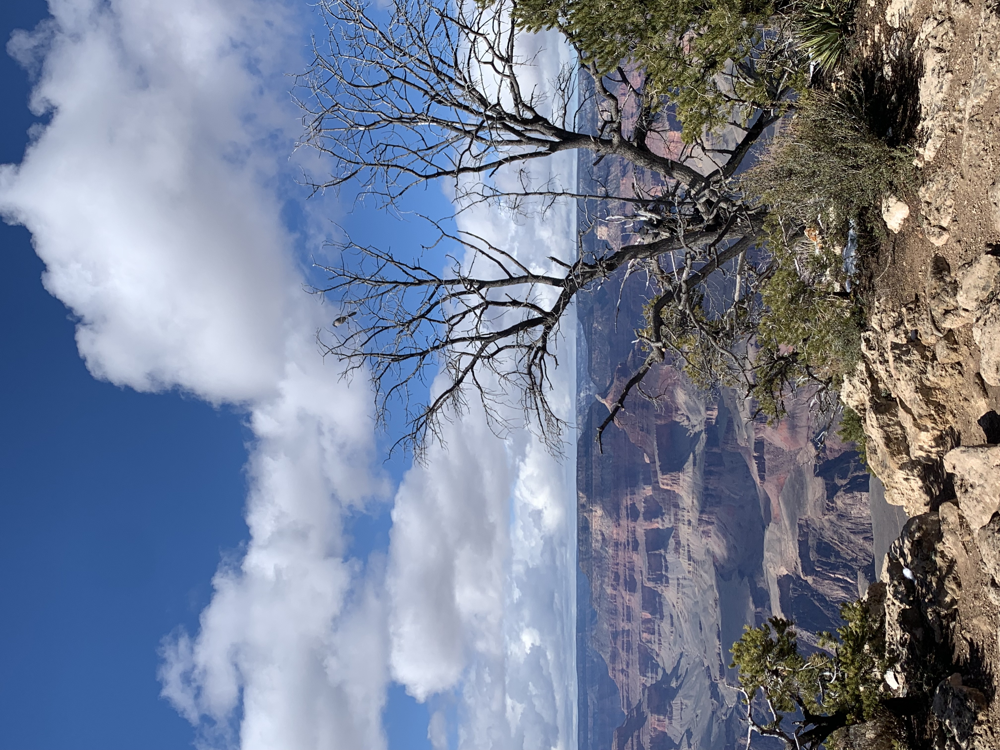

Daffodil Bulb Co.
Daffodils, The Herald of Spring!Created in 2025
Designed an attractive and navigable site for the Daffodil Bulb Co. Included product ordering and purchasing capabilities.

Created in 2025
Designed an attractive and navigable site for the Daffodil Bulb Co. Included product ordering and purchasing capabilities.
Created 2025
Enabled PNW Olympic Designs to display their work in an authentic and stunnning way. Set up event calendar and ticket ordering.

Created 2024
Designed an interactive website where hikers can explore the trails into Grand Canyon and book and purchase adventures.
